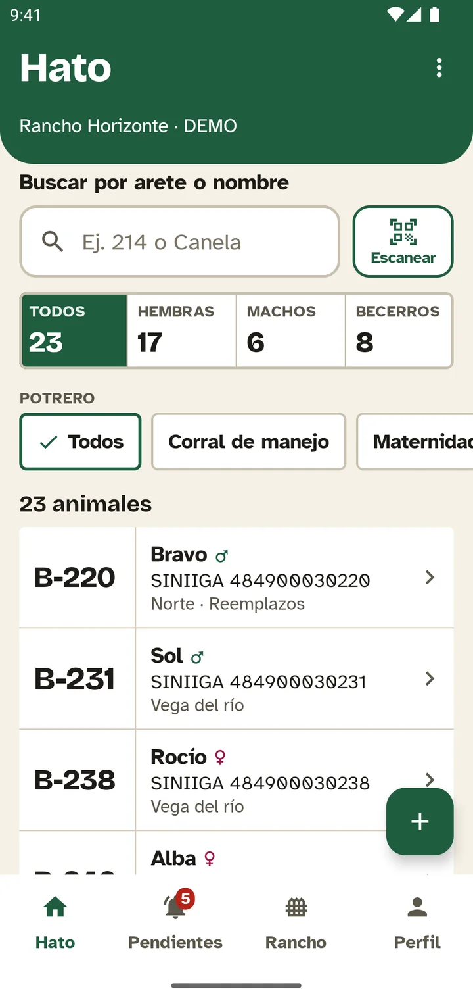
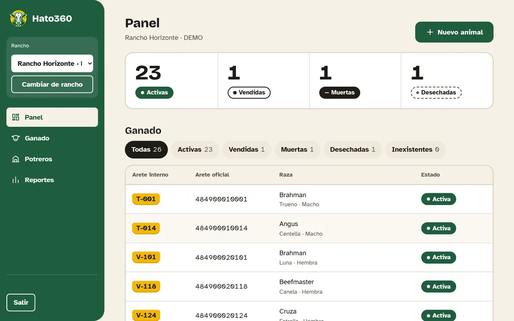

Tu ganado al día
Cada animal con su arete, su historia y dónde anda. Lo encuentras en segundos, con la vaca enfrente.
Brahman · HembraArete oficial MX-0215 1753
- Vacuna
- 12 oct 2026
- Peso
- 438 kg
- Potrero
- Vega del río
Hato360 es la app para llevar el registro de tu ganado: aretes, vacunas, pesos y potreros. Lo que anotas se guarda en el teléfono y se comparte con tu rancho cuando vuelve la señal.

Cada animal con su arete, su historia y dónde anda. Lo encuentras en segundos, con la vaca enfrente.
Anota en el potrero más lejano. Todo se queda en tu teléfono y se envía solo cuando vuelve la señal.
Cada quien en su teléfono, todos viendo el mismo ganado. Lo que uno registra, los demás lo ven.
Entra con la misma cuenta de la app y consulta tu ganado en pantalla grande.
Iniciar sesión